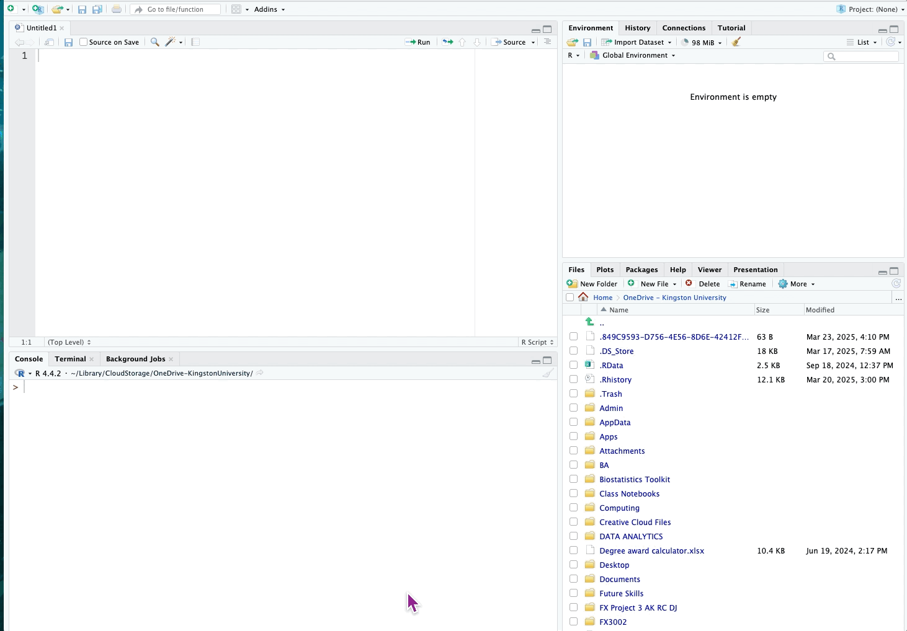

{kind=link}
getwd()[1] "/Users/richardtcook/Library/CloudStorage/OneDrive-KingstonUniversity/LS5022 Research skills (new)/Biostatistics lectures & workshops/Session 1/Quarto files"This first workshop aims to introduce you to R and RStudio. R is the programming language; RStudio is the IDE (Integrated Development Environment) that makes R easier to use. You must first download R and then Download RStudio (R is a requirement for RStudio to work).
To get started, click on the tab below entitled “Installing R and RStudio”
1. Installing R and RStudio on a University computer:
Go to AppsAnywhere and load RStudio (R will install automatically).
2. To download R and RStudio to your own laptop:
Go to RStudio (click on this link)
Note: R updates quite regularly, and so it is a good idea to check the latest version of R from time to time. To update, simply repeat the instructions above to install the latest version of R. You will need to re-install packages to R that you had previously used: just use install.packages(“package name”) in R.
Figure 1 shows the arrangement of the four windows in RStudio:

Click on the green ‘+’ symbol at the top left of the screen and select ‘R Script’. You will now see 4 areas of the RStudio page:
1. The Code Editor at the top left area where you will do most of your work and store your code. Here you can write R code and notes to yourself. You can also save the R code and notes in an .R file
2. The area below it (bottom left) is the R Console, and is essentially like R without RStudio. It is where the R code that you type in the Editor above and its output appears when you run the code.
3. Top right is the Workspace environment where you can see opened objects and data.
4. At the bottom right is the the File Directory and where you can create and delete folders (+Folder) and also see installed packages. Use the Files tab to select the folder in which you wish to save your work
1. First, locate your ‘OneDrive - Kingston University’ folder in the File Directory in RStudio File Explorer) where you will save your work for this module
Locate your OneDrive by typing in the R Console:
For Windows, use: setwd("O:/")
For a Mac, use: setwd("~/").

Then click the ‘More’ cog icon in the File Directory and select Go to working directory and find your OneDrive folder in the File Directory in RStudio
Create a new folder entitled LS5022 (using the +Folder option in the File Directory) in which you can save all work on this module. In the LS5022 folder, create a sub-folder entitled Statistics
Set this as your working directory using the cog icon and then select ‘Set As Working Directory’.
a) For University computers:
You will need to do this each time you open RStudio
b) Using your own laptop:
When you first use RStudio, you can set Global default settings which will be stored for when you next use RStudio.
Check your working directory:
getwd()[1] "/Users/richardtcook/Library/CloudStorage/OneDrive-KingstonUniversity/LS5022 Research skills (new)/Biostatistics lectures & workshops/Session 1/Quarto files"
2. To start an R session, open an R Script using the green ‘+’ sign at the top left of RStudio
You are now ready to use RStudio.
In the next tabs, you will do some simple calculations in R, import an Excel file to R and carry out an independent samples t-test on the data. The code will also generate a bar chart.
This is just an example of how it works, and we will go through this slowly in later sessions so that you can do this yourself.
The first thing I want to do is to load some packages that enhance R for what we are about to do. R has a base language, but packages significantly enhance and add power to what R can do.
You will need to install the following packages for today by running the following code lines. Copy and paste them into the Script editor and run them:
install.packages("tidyverse")
install.packages("psych")
install.packages("rio")
install.packages("rstatix")
install.packages("ggthemes")
If you are using your own laptop, these packages will be saved in your laptop version of RStudio (although you will need to re-install them if you upgrade to a new version of RStudio in the future).
If you are using a university computer. you will need to install the packages you want to use each time.
Once packages are installed you call them by using the library() function:
library(tidyverse)
library(psych)
library(rio)
library(rstatix)
library(ggplot2)
library(ggthemes) NB If R ever says that a package does not exist, it means you need to install it before loading it with library().
If you want to check what packages are installed, the File Directory window has a tab called ‘Packages’. Installed packages are listed. Packages that have been loaded have a tick by them.
1. To create an object called ‘greeting’ with text
greeting <- "Hello World"
greeting
2. Some basic arithmetic! The calculation is stored in an object called ‘add’
add <- 2+4
add
Division:
div <- 6/2
div
3. Create a vector and store in an object called vector1
vector1 <- c(2,4,5,6,7,8,10,11,14,15,21,25,34,35)
vector1
4. Calculate mean and standard deviation
mean1 <- mean(vector1)
mean1
sd1 <- sd(vector1)
sd1
5. Get descriptive statistics of the vector data
vector1 |>
describe()
Here, mean(), sd() and describe() are called functions. All functions are followed by () where arguments can be placed to specify what action is to be performed. We load particular packages to make use of their functions than enhance R.
1. Import an Excel file (in ‘tidy’ format)
Download the file called 2-sample_cholesterol.xlsx from Canvas and save it to your LS5022 folder in your OneDrive.
In RStudio, locate the file in the file directory and set this as your working directory by clicking on the cog icon.

chol_df <- import("2-sample_cholesterol.xlsx")
class(chol_df)NOTE: this is saved as a data frame. This is the type of object that we will be working with.
2. Save the chol_df object as an RData file in your desired folder
(NB This code will save the file to wherever your current working directory is set).
This means the data frame is saved and you don’t have to import it every time you open RStudio! Just type in R (or just copy and paste the script):
save(chol_df, file="chol_df.RData")
To open the RData file in future, simply type
load(file = "chol_df.RData")
3. Finally, save this R file by clicking on the Save icon in RStudio.
It will save to your working directory.